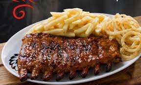
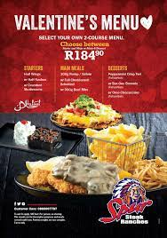

Spur
Spur Corporation is a steakhouse franchise restaurant chain originating from South Africa with a focus on family dining. The head office of Spur Corporation is situated in Century City, Cape Town. Despite its South African origin, Spur restaurants use Native American themes extensively, both in its marketing and decor.The first Spur Steak Ranches opened its doors in Cape Town in 1967. The group first listed on the travel and leisure sector of the JSE in 1986. A major restructuring of the group was undertaken in 1999, which resulted in the formation and listing of Spur Corporation, as we know it today.